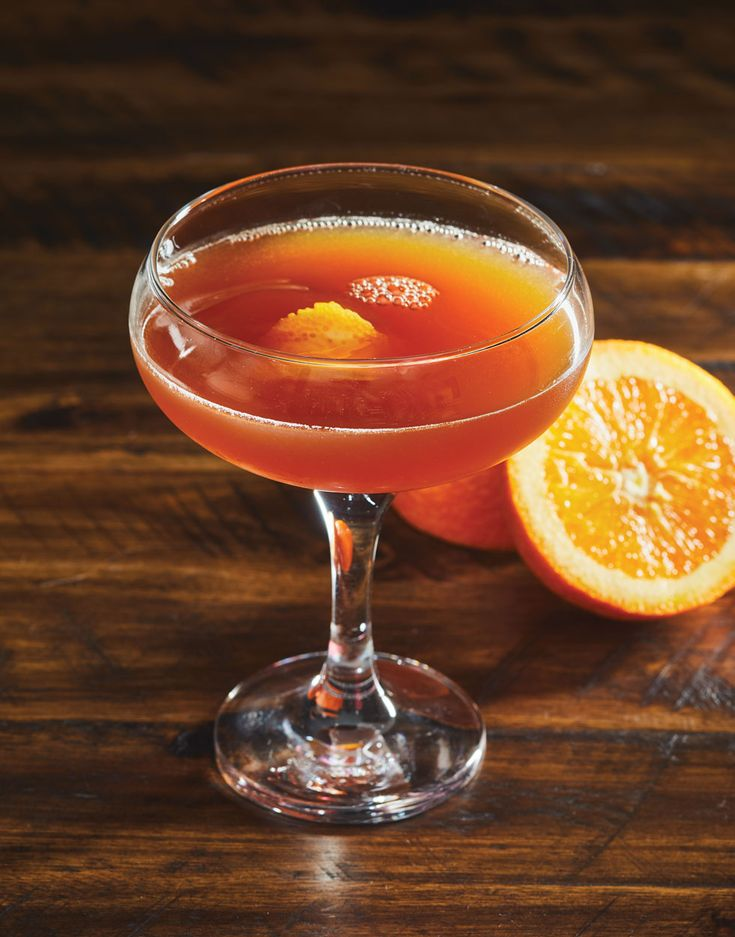
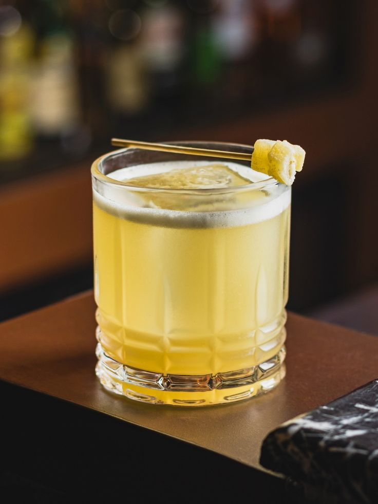
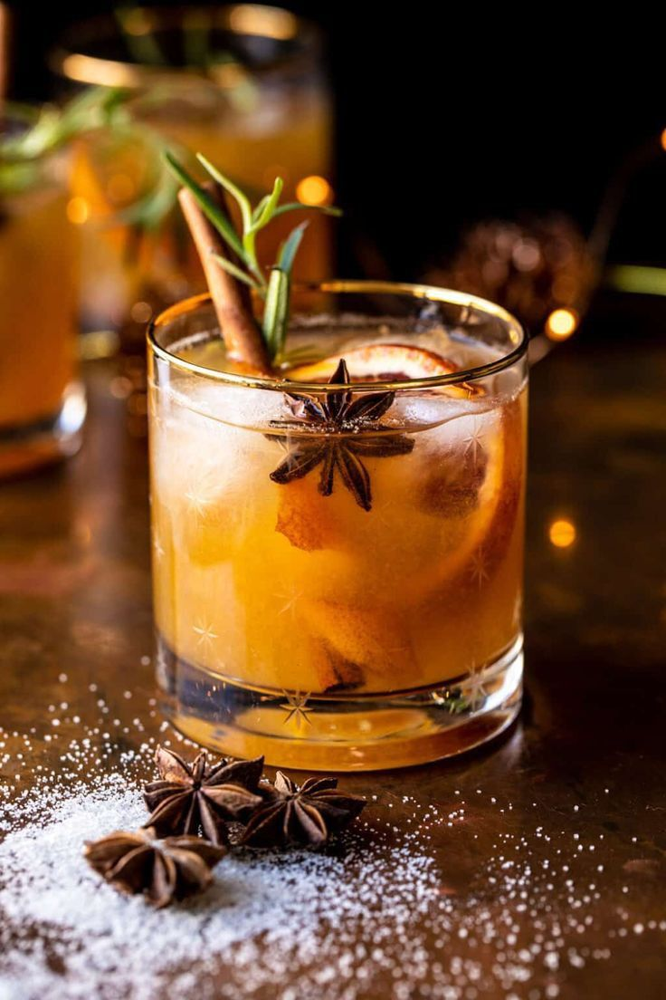
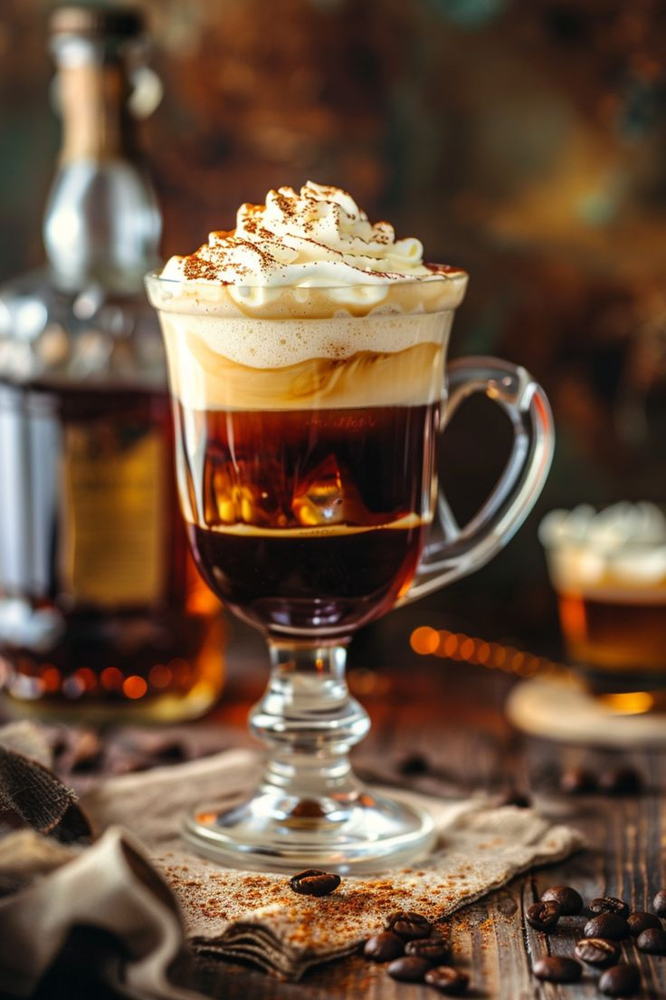

Se você procura uma bebida para te ajudar a se refrescar no verão, o Blood & Sand é uma boa opção.
Tempo de preparo: 3 minutos

Esse drink é uma versão do clássico Moscow Mule que troca a vodka por Cinnamon Whiskey, oferecendo um sabor mais intenso para a bebida.
Tempo de preparo: 5 minutos

O Penicillin é o drink certo para os amantes de whisky, isso porque combina duas variações da bebida para criar um sabor diferenciado.
Tempo de preparo: 5 minutos

Essa bebida é uma boa opção de drink para festas de fim de ano, já que é refrescante e ideal para ser apreciada durante os dias quentes de dezembro.
Tempo de preparo: 5 minutos

O drink Manhattan foi desenvolvido especialmente para aqueles que gostam de apreciar o whisky.
Tempo de preparo: 2 minutos

Se você gosta de bebidas mais adocicadas, o Mustang é o drink com whisky ideal para você.
Tempo de preparo: 3 minutos

O Boulevardier é um coquetel gelado que une whisky, vermute, Campari e gelo, podendo ser decorado com uma tira de casca de laranja.
Tempo de preparo: 6 minutos

O Vieux Carré leva vermute, conhaque, licor, bitter, gelo e, é claro, whisky.
Tempo de preparo: 4 minutos

Por fim, trouxemos essa receita bônus desenvolvida na Irlanda depois da Segunda Guerra Mundial.
Tempo de preparo: 2 minutos